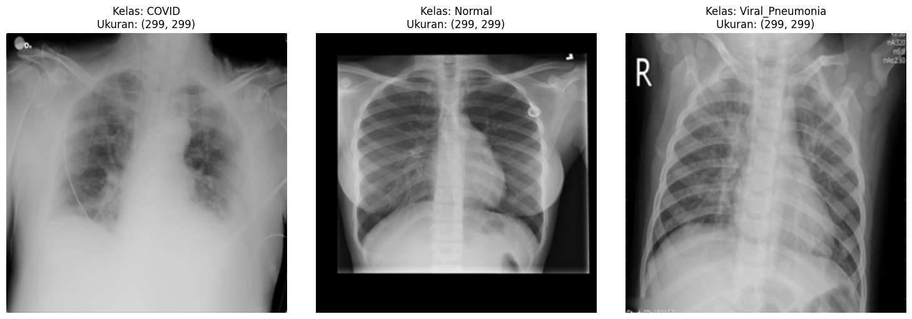

Klasifikasi Multikelas Penyakit Paru pada Citra X-Ray
Implementasi Transfer Learning ResNet-50 untuk mengotomatisasi ekstraksi fitur dan mengklasifikasikan kondisi Normal, COVID-19, dan Viral Pneumonia secara presisi.
⚡ Executive Summary
Proyek ini bertujuan untuk mengatasi tantangan misdiagnosis pada penyakit paru akibat kemiripan visual radiologis. Dengan memanfaatkan teknik Transfer Learning, model ini dilatih secara khusus menangani masalah imbalanced data untuk memprioritaskan sensitivitas klinis (terutama pada kasus COVID-19).
Akurasi Validasi
0.00%
Arsitektur Inti
ResNet-50
Fitur Utama
Grad-CAM
🔬 Tantangan Medis
Visual Ambiguity: Kemiripan tekstur (infiltrat/bercak) antara COVID-19 dan pneumonia biasa seringkali menyulitkan diagnosa manual dan rentan human error.
Data Imbalance: Jumlah data COVID-19 jauh lebih sedikit, AI cenderung bias jika tidak ditangani dengan benar.
Eksklusi Lung Opacity: Kelas ini dihapus dari dataset Kaggle karena hanya temuan radiologis umum, bukan penyakit spesifik. Menghapusnya menajamkan decision boundary model.

Multi-class Chest X-Ray Samples
🎯 Tujuan & Luaran Penelitian
🛡️ Keamanan Klinis
Fokus menekan nilai False Negative (kesalahan diagnosis pasien sakit menjadi sehat) pada kelas COVID-19 dan Pneumonia sebagai prioritas utama keselamatan pasien.
👁️ Explainable AI
Tidak hanya menghasilkan akurasi tinggi, model akan dilengkapi dengan visualisasi Grad-CAM yang berfungsi sebagai second opinion yang dapat diinterpretasi oleh tenaga medis.
📑 Publikasi SINTA
Menyusun temuan eksperimen ke dalam format IMRAD untuk dipublikasikan pada jurnal ilmiah terakreditasi SINTA sebagai kontribusi nyata pada literatur medis dan AI.
🔄 Alur Penelitian (System Flowchart)
📥 Preprocessing & Data
Download Kaggle Dataset. Resizing (224x224), Min-Max Normalization, dan Data Augmentation (Rotasi, Zoom).
✂️ Dataset Splitting
Membagi kumpulan data menjadi 3 bagian: Training Set, Validation Set, dan Testing Set (Pengujian Akhir).
🧠 Modeling (CNN)
Transfer Learning ResNet-50. Fine-tuning pada Fully Connected Layer dengan aktivasi Softmax (3 Kelas).
📊 Evaluasi Model
Pengujian Buta (Blind Test) menggunakan Confusion Matrix untuk melihat Accuracy, Precision, Recall, dan F1-Score.
📈 Analisis Hasil
Pembahasan grafik Learning Curve (Loss & Accuracy tiap Epoch) untuk membuktikan model tidak Overfitting.
📝 Penulisan Jurnal SINTA
Penyusunan naskah publikasi menggunakan format IMRAD (Introduction, Method, Results & Discussion, Conclusion).
📚 Dokumentasi Teknis
Dataset & Preprocessing
Eksplorasi database radiografi, teknik augmentasi, dan penanganan ketimpangan kelas.
Methodology & Training
Arsitektur ResNet-50, strategi Transfer Learning, dan tuning Hyperparameter.
Results & Evaluation
Analisis Confusion Matrix dan visualisasi Explainable AI (Grad-CAM).
Powered by State-of-the-Art Tools